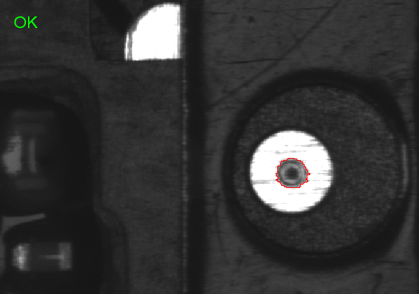
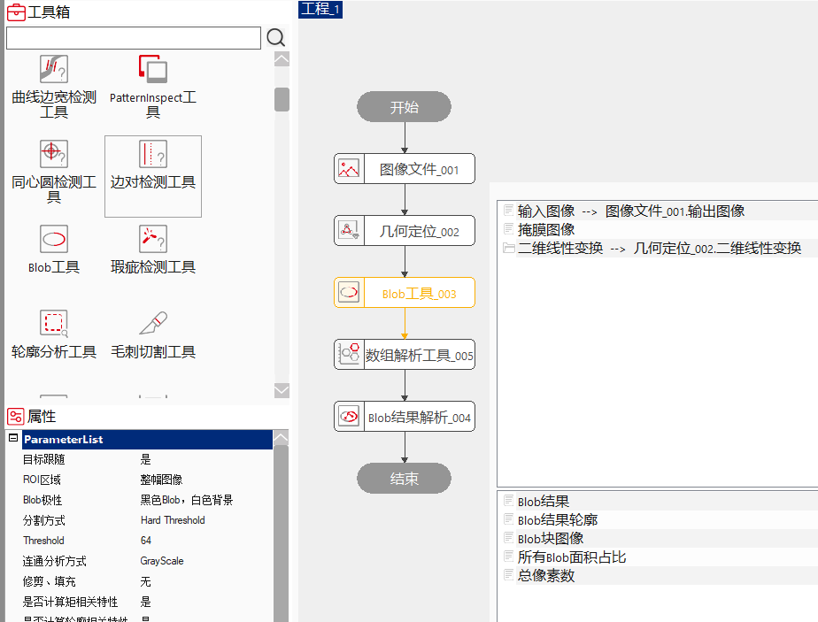
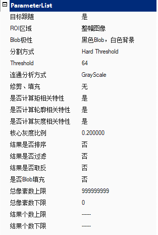
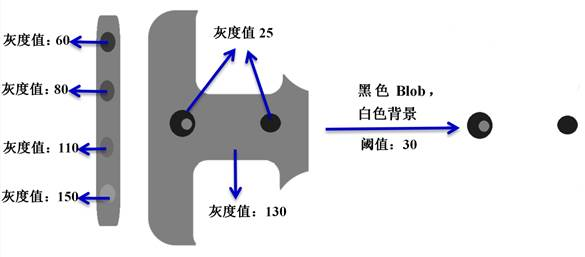
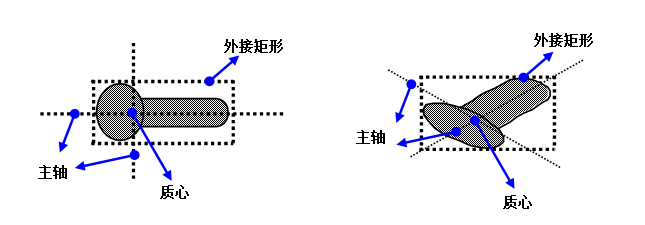
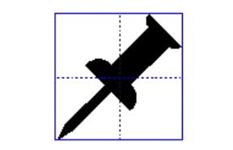
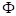
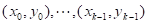
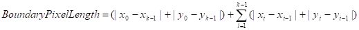
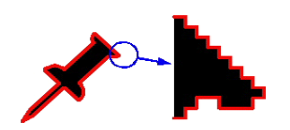

Mục đích của công cụ Blob là phát hiện và phân tích các hình dạng 2D trong toàn bộ hình ảnh hoặc trong vùng ROI được chỉ định, từ đó thu được các thông tin như vị trí mục tiêu, hình dạng, hướng và mối quan hệ tô-pô giữa các mục tiêu. Dựa vào những thông tin này có thể nhận dạng mục tiêu. Hiệu quả ứng dụng thực tế như Hình 1 minh họa.

Công cụ Blob chủ yếu dùng để trích xuất các đường bao đặc trưng khép kín của hình ảnh. Thông qua việc thiết lập các tham số, lọc và trích xuất các vùng khép kín thỏa mãn điều kiện.
Công cụ Blob thông qua việc thiết lập tham số để lấy được đường bao đặc trưng hình học của mục tiêu; đặc trưng hình học có thể được biến đổi một cách chính xác và nhanh chóng như xoay, phóng to/thu nhỏ, và có khả năng thích ứng tốt với sự thay đổi tuyến tính hoặc phi tuyến của mức xám trong ảnh. Công cụ Blob tính toán dữ liệu kết quả Blob của hình ảnh thời gian thực trong ảnh thời gian thực.


Theo dõi mục tiêu
Thuộc tính theo dõi mục tiêu được dùng để thiết lập vùng ROI của công cụ Blob có chịu ảnh hưởng bởi biến đổi tuyến tính 2D hay không.
Có: Công cụ Blob có thể liên kết với biến đổi tuyến tính 2D, vùng ROI sẽ di chuyển theo biến đổi tuyến tính 2D, ví dụ như biến đổi 2D đầu ra từ công cụ định vị hình học.
Không: Công cụ Blob không thể liên kết với biến đổi tuyến tính 2D, vùng ROI có thể được chỉ định theo thời gian thực, tức là toạ độ ROI đặt thế nào thì vùng ROI nằm đúng tại đó. Khi đó có thể dùng các công cụ như công cụ script để thiết lập vị trí ROI theo thời gian thực. Thiết lập vùng ROI thông qua chuỗi dữ liệu đặc biệt của công cụ Blob, như “Công khai ROI hình chữ nhật”, “Công khai ROI hình chữ nhật affine”, v.v.
Chuỗi tham số đặc biệt
Chuỗi dữ liệu đặc biệt ở đây chỉ vùng ROI không chịu ảnh hưởng của biến đổi tuyến tính 2D, có thể thiết lập toạ độ vị trí của vùng ROI trực tiếp bằng các công cụ như script. Cần phối hợp với thiết lập “theo dõi mục tiêu” ở chế độ “Không”.
Phương pháp phân tách
None (nhập trực tiếp): Đối với ảnh đã được phân tách, cung cấp hệ số tỷ lệ Scale để chuẩn hoá trọng số điểm ảnh, thuận tiện cho việc tính toán đặc trưng sau đó.
Ngưỡng cứng (Hard Threshold): Nguyên lý phân tách theo ngưỡng cứng khá đơn giản, tức là coi các điểm ảnh có mức xám nhỏ hơn ngưỡng là mục tiêu, các điểm ảnh lớn hơn hoặc bằng ngưỡng là nền, hoặc ngược lại. Hình 2 là ví dụ phân tách bằng ngưỡng cứng, trong đó ngưỡng đặt là 100, điểm ảnh có mức xám < 100 là mục tiêu, >= 150 là nền.

Ngưỡng mềm (Soft Threshold): Để khử hoặc giảm lỗi lượng tử hóa không gian do phân tách ngưỡng cứng gây ra, có thể sử dụng ngưỡng mềm. Ngưỡng mềm chuyển ảnh mức xám thành ảnh trọng số. Khác với ngưỡng cứng, ngưỡng mềm là một dải giá trị: điểm ảnh có mức xám lớn hơn ngưỡng → trọng số 1.0 (mục tiêu), nhỏ hơn ngưỡng → trọng số 0.0 (nền), nằm trong khoảng thì trọng số trong khoảng 0.0–1.0.
Phân tách ngưỡng mềm dùng 4 tham số: ngưỡng cao (High Threshold), ngưỡng thấp (Low Threshold), hệ số làm mềm (Softness – mức độ chuyển tiếp trong dải ngưỡng, phạm vi [0, 254]), và cực tính. Hình 3 minh họa tham số của ngưỡng mềm.

Phân tích liên thông
Whole Image: Tất cả điểm ảnh mục tiêu sau phân tách được coi là một Blob duy nhất. Dù tồn tại nhiều vùng không liên thông, chúng vẫn bị coi là một Blob. Mọi đặc trưng đều tính trên toàn bộ vùng mục tiêu.
Gray Scale: Phân vùng mục tiêu thành các vùng liên thông theo kết nối 8 điểm.
Labeled: Dùng khi cần chia ảnh thành nhiều nhóm thay vì chỉ mục tiêu/nền. Ví dụ chia thành 4 lớp mức xám khác nhau, mỗi lớp có một nhãn (label) duy nhất. Phân tích liên thông kiểu Labeled nhóm các điểm ảnh có cùng nhãn và liên thông thành một vùng. Không tồn tại khái niệm mục tiêu/nền; tất cả vùng là liên thông 6 điểm.
Đại lượng đặc trưng
Trong phân tích Blob, các đại lượng đặc trưng được chia làm 4 loại: cơ bản, liên quan ma trận, liên quan đường bao, và liên quan mức xám. Hình 4 minh họa Blob và đặc trưng của nó.

Đặc trưng cơ bản
1. Nhãn liên thông (ConnectivityLabel): phân loại vùng. Ảnh xám: Blob = 1, lỗ = 0. Ảnh nhãn: giá trị của Blob.
2. Diện tích (Area): tổng trọng số của tất cả điểm ảnh khác 0 trong Blob.
3. Trọng tâm (CenterMassX, CenterMassY): điểm cân bằng của Blob, không nhất thiết nằm trong Blob (Hình 5).

4. HCN bao ngoài nhỏ nhất theo tọa độ: dùng xMin, xMax, yMin, yMax để mô tả (Hình 6).

5. HCN bao ngoài nhỏ nhất theo trục chính (Hình 7): gốc toạ độ dời về trọng tâm, xoay theo trục chính.


6. Số lượng nút con (NumChildren): trước khi cắt hoặc lấp.
7. Độ dài đường chéo HCN bao ngoài nhỏ nhất.
8. Độ lệch trọng tâm so với trung tâm HCN bao ngoài.
Đặc trưng liên quan ma trận
9. Mô men quán tính bậc 2 theo trục toạ độ (qua trọng tâm và song song trục X/Y) – Hình 8.

10. Góc phương (Angle): trục có mô men quán tính bậc 2 nhỏ nhất – Hình 9.

11. Mô men quán tính bậc 2 theo trục chính: lớn nhất và nhỏ nhất.
12. Độ kéo dài (Elongation): tỷ lệ giữa mô men lớn nhất và nhỏ nhất. Hình tròn có elongation = 1 (thấp nhất).
13. Mật độ (Density): độ chặt điểm bên trong, = diện tích / diện tích HCN bao ngoài theo trục chính. Giá trị (0,1].
14. Mức xước (Scratchness): bình phương chiều rộng HCN theo trục chính / diện tích. Càng lớn càng có khả năng là vết xước.
15. Độ lệch tâm (Eccentricity): chỉ mức độ tròn. Càng lớn thì càng dẹt; nhỏ thì gần tròn.
Đặc trưng đường bao
16. Chiều dài điểm ảnh biên (BoundaryPixelLength): điểm ảnh biên có thứ tự liên tiếp – Hình 10.



17. Chu vi (Perimeter).
18. Độ lệch tròn (Acircularity).
19. Độ lệch tròn chuẩn hoá (AcircularityRms).
Đặc trưng mức xám
20. Mức xám nhỏ nhất trong Blob.
21. Mức xám lớn nhất trong Blob.
22. Mức xám trung bình trong Blob.
23. Giá trị trung bình theo “sự kiện” lớn nhất – ở đây hiểu là trung bình theo đoạn (run-length); tức giá trị trung bình lớn nhất trong các đoạn trong Blob.
24. Giá trị trung bình theo “sự kiện” nhỏ nhất – tức trung bình nhỏ nhất của các đoạn trong Blob.

| Ghi chú |
|---|
| 1. Công cụ Blob thường được sử dụng kết hợp với công cụ định vị hình học. Sau khi công cụ định vị hình học xác định được khu vực cụ thể dựa trên đặc trưng hình học, công cụ Blob sẽ thực hiện việc phân tích kiểm tra tại vị trí được chỉ định trong khu vực đó, nhằm nâng cao độ chính xác và hiệu quả kiểm tra. |
| 2. Khi sử dụng công cụ Blob, cần chú ý đến vị trí đặt vùng ROI. Nếu vùng ROI vượt ra ngoài phạm vi ảnh, việc phân tích Blob sẽ thất bại. |
| 3. Kết quả của công cụ Blob cần sử dụng kết hợp với công cụ phân tích mảng và công cụ phân tích kết quả Blob. Công cụ phân tích mảng cần chọn kiểu dữ liệu là “GcSingleBlobResult” để lấy kết quả đầu ra từ công cụ Blob, sau đó sử dụng công cụ phân tích kết quả Blob để phân tích dữ liệu từ công cụ phân tích mảng. |
| Tên tham số | Giải thích |
|---|---|
| Theo dõi mục tiêu | Có: có thể liên kết với phép biến đổi tuyến tính 2D; Không: thực hiện công cụ theo khu vực ROI đã liên kết. |
| Vùng ROI | Khu vực thực hiện kiểm tra của công cụ, bao gồm 10 loại: toàn bộ ảnh, ROI hình chữ nhật, ROI hình chữ nhật biến đổi affine, ROI hình tròn, ROI vành khuyên, ROI hình elip, ROI đa giác, ROI đa tuyến biến đổi, ROI hình tự do (đa giác có cạnh là đường cong), và ROI nhiều khu vực. |
| Cực tính Blob | Cực tính Blob là sự chuyển đổi đen-trắng giữa mục tiêu và nền, gồm 2 loại: Blob đen - nền trắng và Blob trắng - nền đen. |
| Phương pháp phân tách | Trước khi phân tích Blob, cần phân tách ảnh thành mục tiêu và nền. Công cụ Blob cung cấp 3 phương pháp phân tách: None (đầu vào trực tiếp), Hard Threshold (ngưỡng cứng), và Soft Threshold (ngưỡng mềm). |
| Ngưỡng | Giá trị ngưỡng của phương pháp phân tách cứng. |
| Phương pháp phân tích liên thông | Sau khi ảnh được phân tách thành mục tiêu và nền, công cụ Blob sử dụng các thuộc tính liên thông của điểm ảnh để gom nhóm thành vùng liên thông. Có 3 phương pháp: Toàn ảnh (Whole Image), Thang xám (Gray Scale) và Gắn nhãn (Labeled). |
| Cắt và điền | Khi chọn phương pháp phân tích liên thông là Gray Scale hoặc Labeled thì hiển thị tham số này, gồm 3 loại: Không, Cắt và Điền. Tham số này sẽ cắt bỏ hoặc điền vào Blob nhỏ hơn diện tích tối thiểu đã chỉ định. |
| Giới hạn trên tổng số điểm ảnh | Tổng số điểm ảnh của tất cả các Blob được phát hiện. Không được nhỏ hơn giới hạn dưới, giá trị từ [0, 999999999]. Nếu nằm trong khoảng, kết quả là true, ngược lại là false. Nhập “——–“ để không giới hạn. |
| Giới hạn dưới tổng số điểm ảnh | Tổng số điểm ảnh tối thiểu. Không được lớn hơn giới hạn trên, giá trị từ [0, 999999999]. Nếu nằm trong khoảng, kết quả là true, ngược lại là false. Nhập “——–“ để không giới hạn. |
| Giới hạn trên số lượng kết quả | Số lượng Blob tối đa được phát hiện. Không được nhỏ hơn giới hạn dưới, giá trị từ [0, 999999999]. Nếu nằm trong khoảng, kết quả là true, ngược lại là false. Nhập “——–“ để không giới hạn. |
| Giới hạn dưới số lượng kết quả | Số lượng Blob tối thiểu được phát hiện. Không được lớn hơn giới hạn trên, giá trị từ [0, 999999999]. Nếu nằm trong khoảng, kết quả là true, ngược lại là false. Nhập “——–“ để không giới hạn. |
| Giới hạn dưới tỉ lệ diện tích | Tỉ lệ giữa diện tích các Blob và diện tích vùng ROI. Giá trị nhỏ nhất, không được lớn hơn giới hạn trên, phạm vi [0.0, 1.0]. Nhập “——–“ để không kiểm tra. |
| Giới hạn trên tỉ lệ diện tích | Tỉ lệ lớn nhất giữa diện tích các Blob và diện tích vùng ROI. Không được nhỏ hơn giới hạn dưới, phạm vi [0.0, 1.0]. Nhập “——–“ để không kiểm tra. |
| Tính toán đặc trưng mômen? | Nếu chọn “Có”, sẽ tính toán các đặc trưng liên quan đến mômen, hiển thị trong cửa sổ giám sát kết quả Blob, và tham gia vào bộ lọc kết quả. |
| Tính toán đặc trưng đường viền? | Nếu chọn “Có”, sẽ tính toán các đặc trưng đường viền, hiển thị trong cửa sổ giám sát kết quả Blob, và tham gia vào bộ lọc kết quả. |
| Tính toán đặc trưng mức xám? | Nếu chọn “Có”, sẽ tính toán các đặc trưng mức xám, hiển thị trong cửa sổ giám sát kết quả Blob, và tham gia vào bộ lọc kết quả. |
| Có sắp xếp kết quả không? | Nếu chọn “Có”, sẽ hiển thị các tham số sắp xếp và thực hiện sắp xếp kết quả theo đó. |
| Có lọc kết quả không? | Nếu chọn “Có”, sẽ lọc kết quả theo các tham số đã cấu hình. |
| Có đảo ngược kết quả không? | Nếu chọn “Có”, kết quả công cụ sẽ bị đảo ngược, ví dụ nếu là false thì thành true và ngược lại. |
| Có tô màu Blob không? | Nếu chọn “Có”, các khu vực Blob phát hiện sẽ được tô màu trắng trên nền đen, dựa theo vị trí, hình dạng, kích thước và hướng. |
| Cửa sổ hình ảnh | Vùng ROI |
| Ảnh đầu vào | Hiển thị hình ảnh cần kiểm tra. |
| Ảnh mặt nạ | Phần ảnh không cần kiểm tra trong ảnh đầu vào. |
| Chuỗi dữ liệu | Ảnh đầu vào |
| Biến đổi tuyến tính 2D | Biến đổi tịnh tiến, xoay, tỉ lệ của mục tiêu so với mẫu. |
| Giao diện nâng cao | Không có |
| Tên tham số | Giải thích tham số |
|---|---|
| Ảnh đầu vào | Chiều rộng, chiều cao và kích thước điểm ảnh của ảnh đầu ra, giống với tham số ảnh đầu vào của cửa sổ giám sát. |
| Số lượng kết quả | Số lượng kết quả Blob đáp ứng điều kiện thiết lập trước, dùng cho các công cụ phía sau, giống với tham số số lượng kết quả trong cửa sổ giám sát. |
| Kết quả Blob | Thông tin kết quả đáp ứng điều kiện thiết lập trước, bao gồm các đặc trưng cơ bản, đặc trưng liên quan đến mômen, đặc trưng đường viền và đặc trưng mức xám,... dùng cho các công cụ phía sau, giống với tham số kết quả Blob trong cửa sổ giám sát. |
| Tỉ lệ diện tích tất cả Blob | Tỉ lệ giữa diện tích tất cả các Blob và diện tích vùng ROI kiểm tra, dùng cho các công cụ phía sau, giống với tham số tỉ lệ diện tích tất cả Blob trong cửa sổ giám sát. |
| Tổng số điểm ảnh | Tổng số điểm ảnh chiếm bởi tất cả các Blob được phát hiện. |
| Kết quả thực thi | Kết quả thực thi của công cụ: thực thi thành công hiển thị “OK”, thất bại hiển thị “NG”, giống với tham số kết quả thực thi trong cửa sổ giám sát. |
| Thời gian thực thi | Thời gian thực thi công cụ. |
| ROI hình chữ nhật công khai | ROI hình chữ nhật có thể thay đổi từ bên ngoài và không bị ảnh hưởng bởi phép biến đổi tuyến tính 2D. |
| ROI hình chữ nhật biến đổi công khai | ROI hình chữ nhật affine có thể thay đổi từ bên ngoài và không bị ảnh hưởng bởi phép biến đổi tuyến tính 2D. |
| ROI hình tròn công khai | ROI hình tròn có thể thay đổi từ bên ngoài và không bị ảnh hưởng bởi phép biến đổi tuyến tính 2D. |
| ROI vành khuyên công khai | ROI hình vành khuyên có thể thay đổi từ bên ngoài và không bị ảnh hưởng bởi phép biến đổi tuyến tính 2D. |
| ROI hình elip công khai | ROI hình elip có thể thay đổi từ bên ngoài và không bị ảnh hưởng bởi phép biến đổi tuyến tính 2D. |
| ROI đa giác công khai | ROI đa giác có thể thay đổi từ bên ngoài và không bị ảnh hưởng bởi phép biến đổi tuyến tính 2D. |
| ROI hình tự do công khai | ROI hình tự do có thể thay đổi từ bên ngoài và không bị ảnh hưởng bởi phép biến đổi tuyến tính 2D (đa giác có thể có cạnh là đường cong). |
| Ảnh mặt nạ | Ảnh không cần kiểm tra trong ảnh đầu vào. |
参见“\Samples\Blob工具.gvp”。